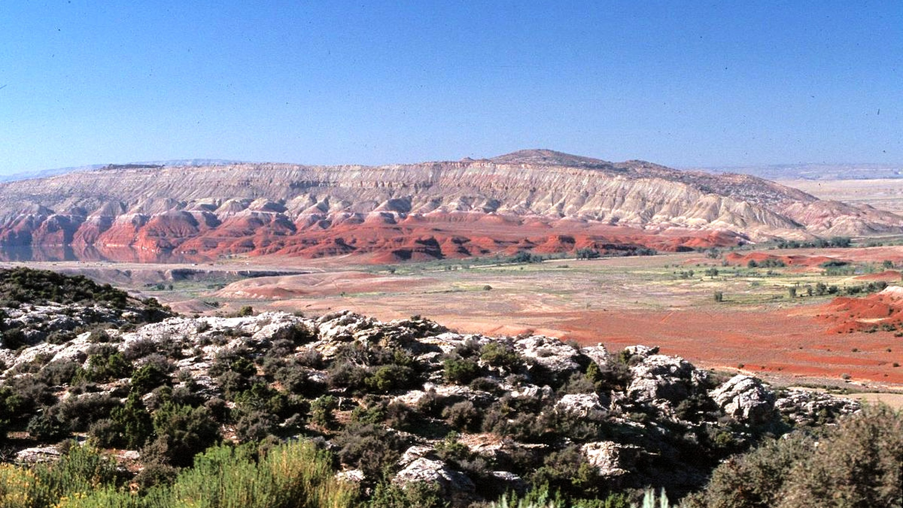
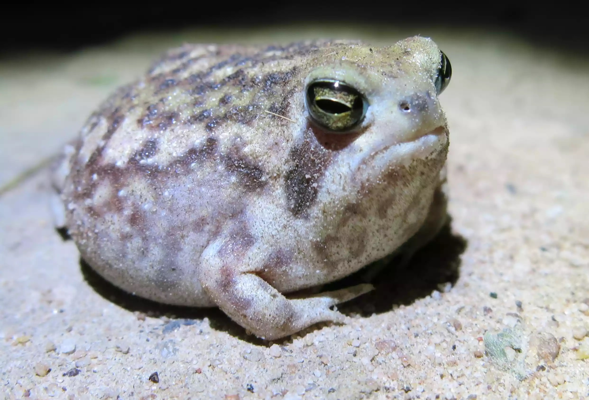
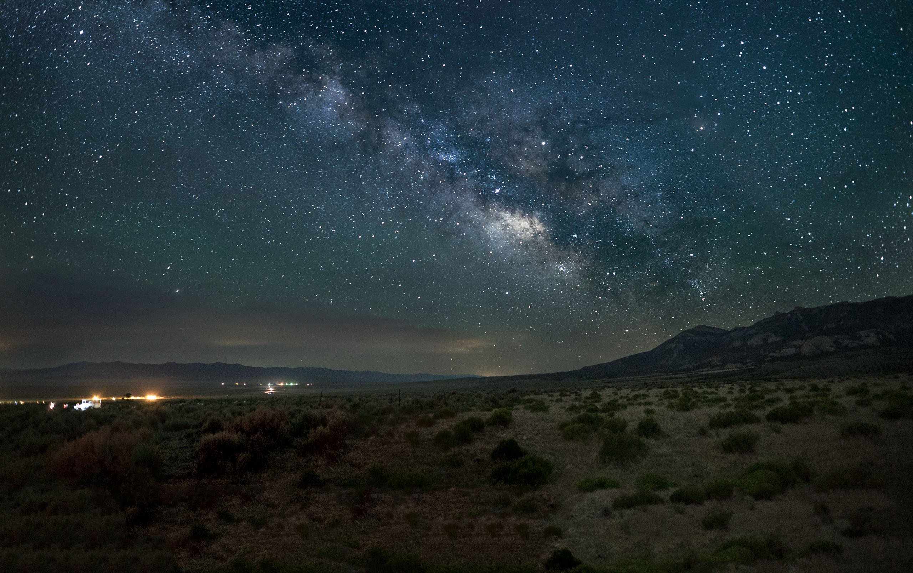

Sobrevivir en un mundo extremo
Intrigante Entorno Hostil
Descubre cómo la rana lluvia del desierto desafía todas las expectativas de supervivencia en uno de los entornos más inhóspitos del mundo: el desierto. Aprende sobre sus adaptaciones únicas, como su capacidad para resistir largos períodos sin agua y cómo obtiene su nombre gracias a un fenómeno climático asombroso.
Colores Deslumbrantes en Medio de la Aridez
Sumérgete en el mundo de la rana lluvia del desierto y sorpréndete con su apariencia llamativa. Conocerás cómo sus brillantes colores y patrones únicos le permiten camuflarse y sobrevivir en el entorno desértico mientras despiertan la curiosidad de cualquiera que las observe.
Comportamiento y Ecología Misteriosa
Explora el comportamiento intrigante de esta especie de rana, desde sus hábitos de caza nocturna hasta sus estrategias de reproducción. Descubre cómo se relacionan con otros habitantes del desierto y cómo contribuyen al equilibrio ecológico en su entorno extremo.
